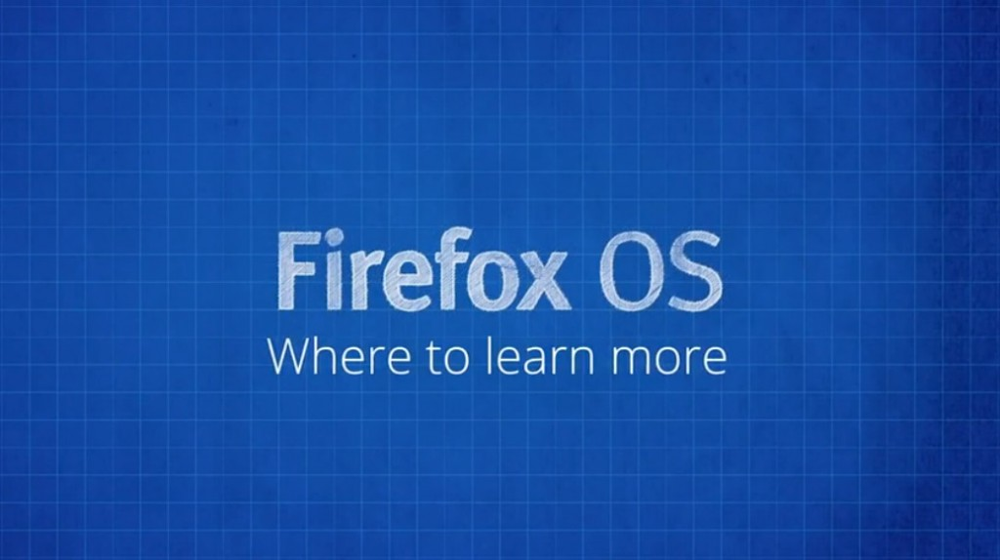

你是熱血的開發者，而且早就想開發自己的 Firefox OS App 嗎？在完成
之後，你應該已經讓自己的 App 順利登上 Marketplace 了吧？是不是很有成就感呢？
除了以上 Firefox OS App 的基礎概念之外，你應該也看過了進一步的介紹影片了：
本系列到此要告一段落了。希望開發者能透過這一系列的影片，都已經深入了解 Firefox OS App。接著要和大家分享更多相關資訊 (中文字幕)。

深入了解
我們希望這一系列的影片，能夠順利帶領開發者建構出自己的第一款 Open Web App。如果你很感興趣也想了解更多細節，還有許多其他資源與管道可供你利用：
- MDN 上的「應用程式中心」另提供有關絕佳 Open Web App 的設計訣竅、可供下載的範例程式碼，另有將自己 App 提交到 Marketplace 的詳細說明
- Hacks 部落格將持續提供 Firefox OS App 的文章 (當然也有像你的第三方開發者所撰寫的心得文)，並有說明 WebAPI 等不同技術的進階文章，讓你能提早了解下一版 Firefox 與 Firefox OS 所將具備的特色功能
- MDN 的 Firefox OS 區塊以及 B2G 的 Wiki 頁面，均有 Firefox OS 的深入資訊
- 我們很多人都掛在 IRC 上；只要到 irc.mozilla.org 並透過 #devrel、#b2g、#openwebapps、#marketplace 都能找到我們
歡迎大家多多交流
─ 影片錄製人：Chris、Sergi、Jan
看完影片，你是否對 Firefox OS App 有更深入的了解呢？請別錯過其他已經中文化的系列影片。
你也可以直接觀賞 MDN 上的原文系列影片《Screencast series: App Basics for Firefox OS》。
亦可欣賞中文版的《系列影片：Firefox OS App 開發入門》。我們已經完成影片的中文化，希望你真的喜歡且獲益良多。